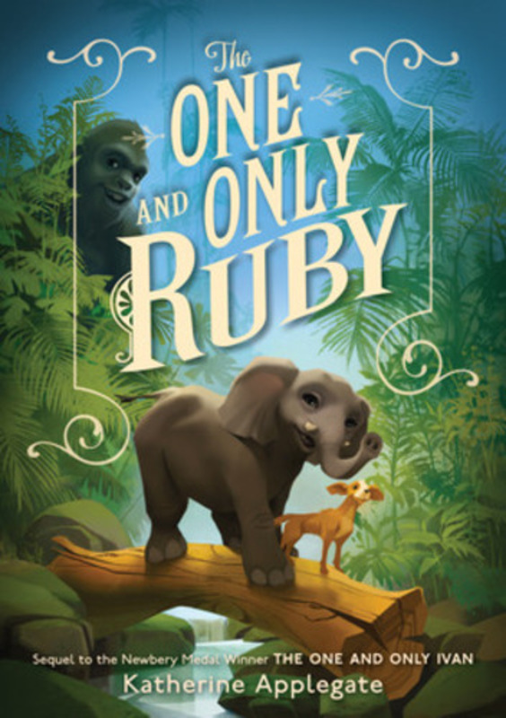
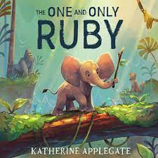
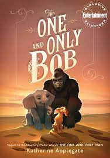
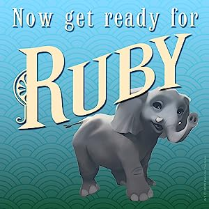

The One and Only Ruby



Price: $9.99
Book Description
Ruby’s story picks up a few months after the events of The One and Only Bob. Now living in a wildlife sanctuary, Ruby’s caretaker from the elephant orphanage in Africa where she grew up is visiting. Seeing him again brings back a flood of memories - both happy and sad - of her life before the circus, and she recounts the time she spent in the African savannah to Ivan and Bob.